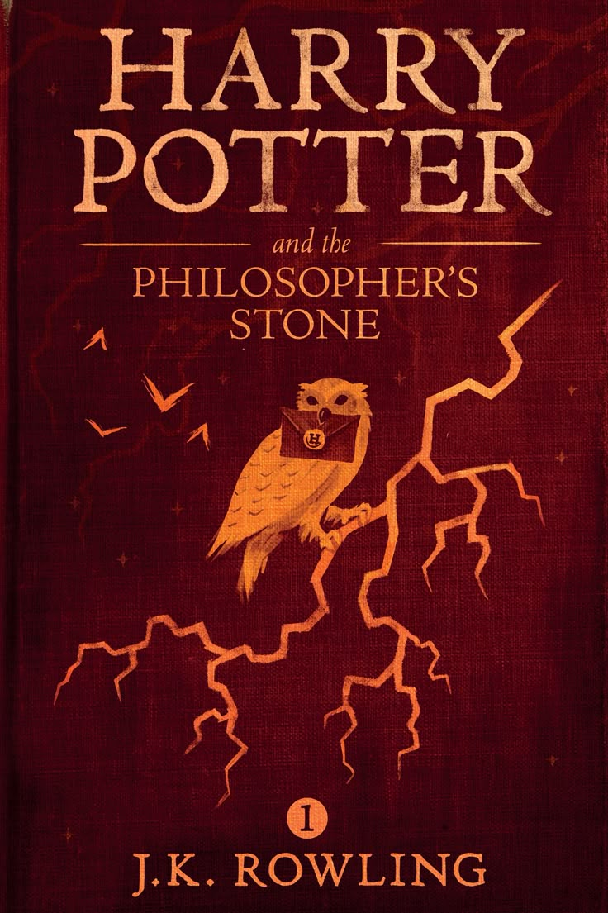
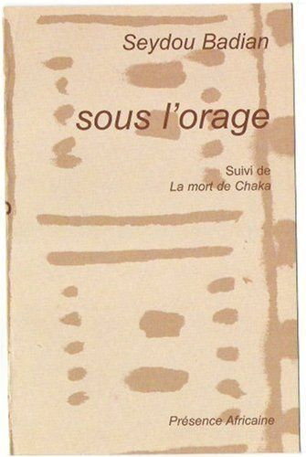
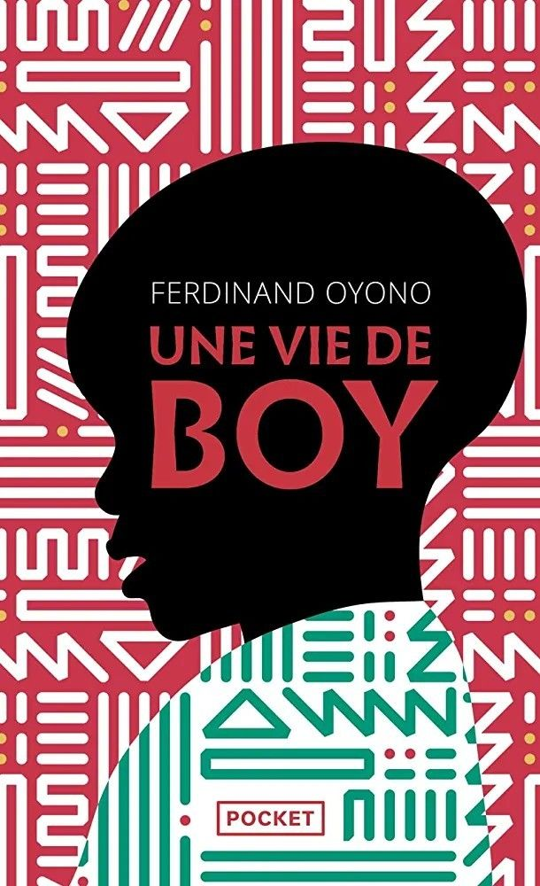

Découvrez notre catalogue de livres
Explorez notre vaste collection de livres numériques couvrant une variété de genres et d'auteurs. Que vous soyez à la recherche de classiques intemporels, de best-sellers contemporains ou de perles rares, notre catalogue a quelque chose à offrir à chaque lecteur.
 Le Petit
Prince - Antoine de Saint-Exupéry écrit en 1943 par un auteur français du nom de Antoine de
Saint-Exupéry
Le Petit
Prince - Antoine de Saint-Exupéry écrit en 1943 par un auteur français du nom de Antoine de
Saint-Exupéry
 By….jpeg) 1984 - George Orwell écrit en 1949 par un auteur
anglais du nom de George Orwell
1984 - George Orwell écrit en 1949 par un auteur
anglais du nom de George Orwell
 Les misérables écrit par Victor HUGO
Les misérables écrit par Victor HUGO

Harry Potter à l'école des sorciers - J.K. Rowling écrit en 1997 par une auteure anglaise du nom de J.K. Rowling
 Le Seigneur des Anneaux -
J.R.R. Tolkien écrit en 195 par un auteur anglais du nom de J.R.R. Tolkien
Le Seigneur des Anneaux -
J.R.R. Tolkien écrit en 195 par un auteur anglais du nom de J.R.R. Tolkien

Sous l'orage; Auteur : Seydou Badian
 L'Enfant noir; Auteur :
Camara Laye
L'Enfant noir; Auteur :
Camara Laye

Le journal d'un boy; Auteur : Amadou Hampâté Bâ